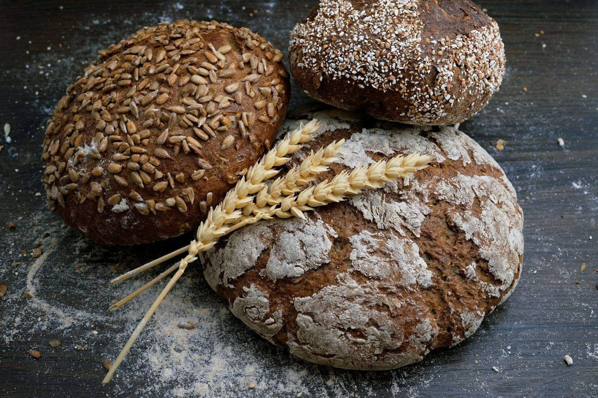
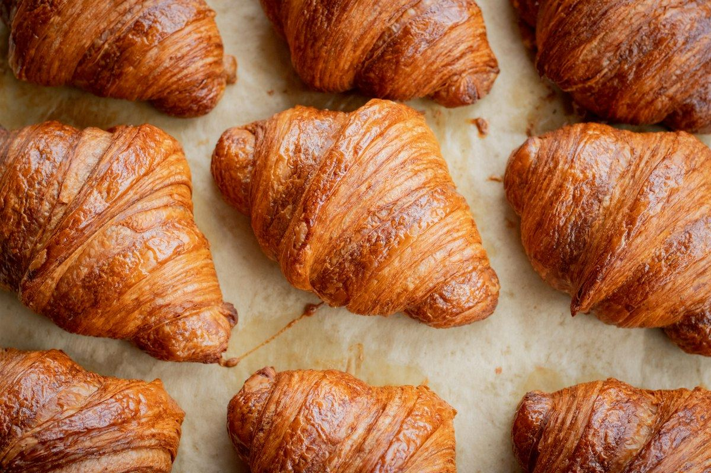
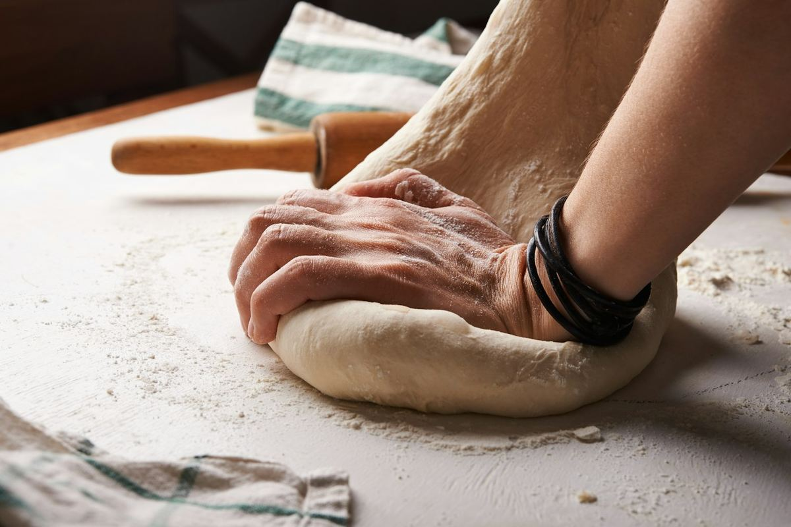
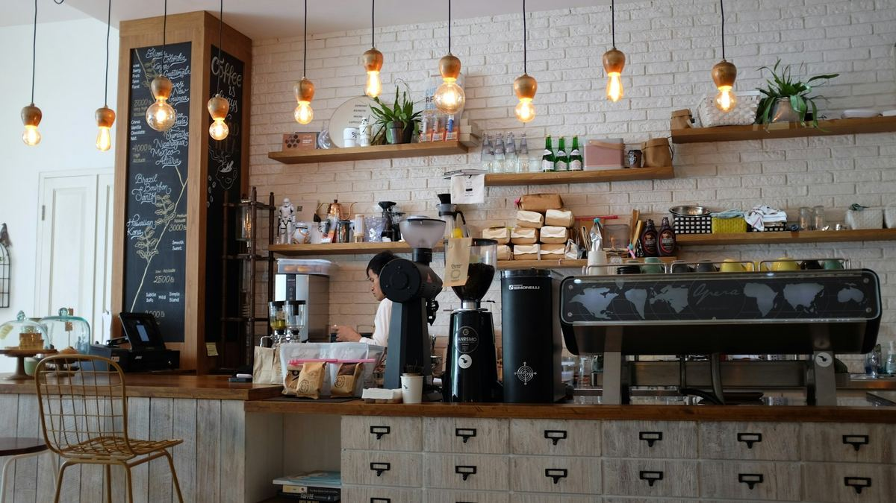
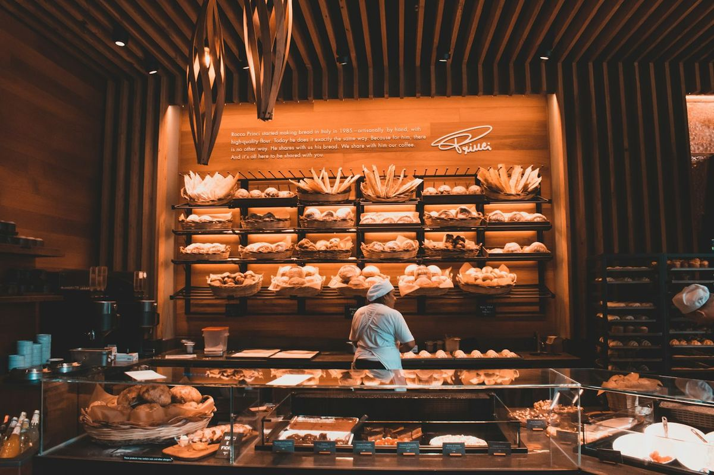
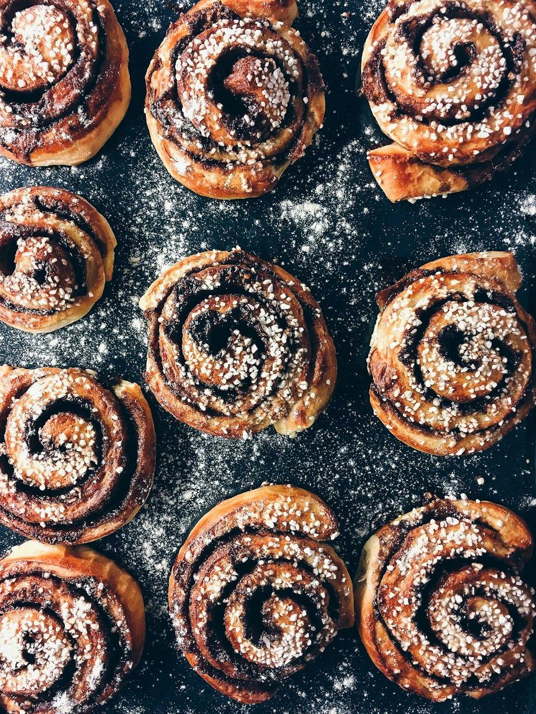
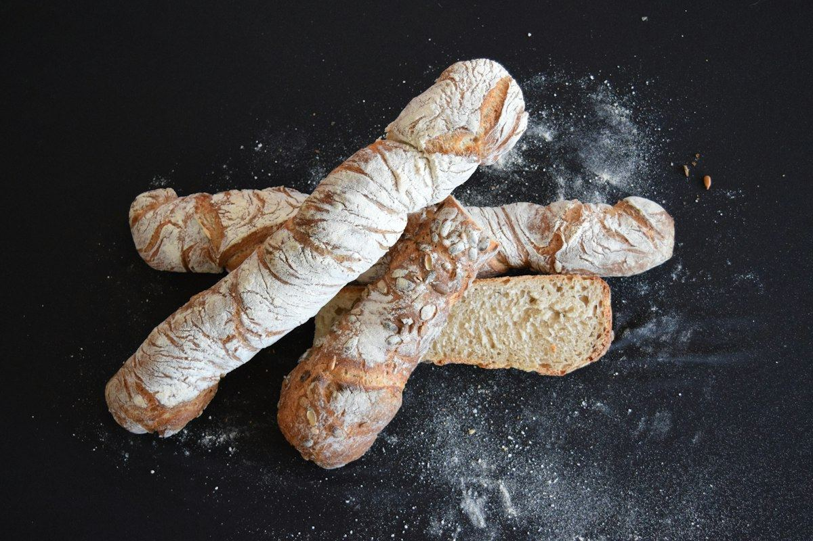
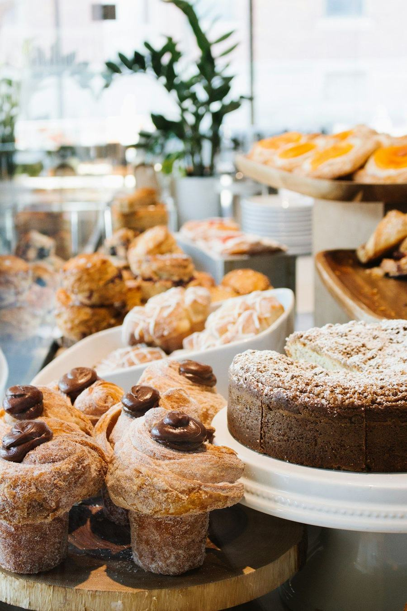
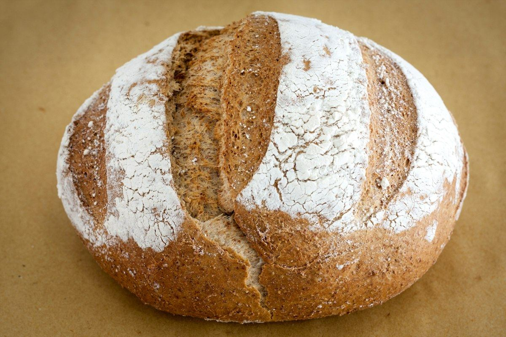
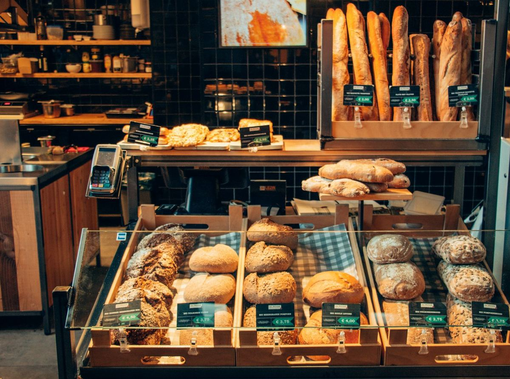

Pains au levain
Miche de campagne, seigle aux graines, épeautre et baguette tradition, façonnés chaque nuit.

Levain naturel, farines moulues sur pierre au Québec et 48 heures de patience. Chaque matin, rue Saint-Joseph, nos fournées sortent du four avant le lever du soleil.
On pétrit à la main, on façonne un à un et on laisse le temps faire son œuvre. Résultat : une croûte qui chante, une mie qui se garde et un goût qui vous ramène chez votre grand-mère.
Pains, viennoiseries, café de spécialité et service traiteur : tout est fait sur place, en petites quantités, avec des ingrédients d’ici.
Miche de campagne, seigle aux graines, épeautre et baguette tradition, façonnés chaque nuit.
Croissants pur beurre, pains au chocolat et brioches à l’érable, laminés sur trois jours.
Espresso, filtre et latte avec un grain torréfié à Limoilou. Lait d’avoine sans frais.
Sandwichs, salades et plateaux pour vos réunions de bureau dans Saint-Roch et au centre-ville.
Gâteaux de fête, bûches des Fêtes et pains sur mesure pour mariages et événements.
Apprenez à nourrir votre levain et à cuire votre première miche, le dimanche matin.

Un aperçu de ce qui vous attend. La vitrine change avec les saisons et l’humeur du boulanger.
Réserver une commande

Tout a commencé en 2014, dans un ancien atelier de cordonnier de la rue Saint-Joseph. Camille et Julien, de retour d’un apprentissage en Bourgogne, rapportaient dans leurs bagages un pot de levain qu’on nourrit encore chaque matin.
Aujourd’hui, l’équipe compte neuf artisans passionnés. On travaille avec des meuniers de Charlevoix et du Bas-Saint-Laurent, des producteurs de l’île d’Orléans et un torréfacteur de Limoilou, parce qu’un bon pain commence par de bons voisins.
« Le meilleur croissant de la ville, point. J’ai changé mon trajet pour le travail juste pour passer devant chaque matin. »
« Leur plateau traiteur a sauvé notre réunion d’équipe. Tout le monde a demandé l’adresse. »
« L’atelier levain du dimanche : un cadeau parfait. Je fais maintenant mon pain à la maison ! »
Farine sur les mains, odeur de beurre chaud et lumière du matin : un petit tour en coulisses.






À deux pas du Jardin Saint-Roch et de la bibliothèque Gabrielle-Roy. Supports à vélos devant la porte, stationnement sur rue.
| Lundi | Fermé |
| Mardi | 7 h – 18 h |
| Mercredi | 7 h – 18 h |
| Jeudi | 7 h – 19 h |
| Vendredi | 7 h – 19 h |
| Samedi | 7 h – 17 h |
| Dimanche | 8 h – 16 h |
Une autre question ? Écrivez-nous, on répond généralement le jour même.
Nous écrireOui ! Commandez au moins 24 h d’avance (48 h pour les gâteaux) via le formulaire ci-dessous ou par téléphone. Votre commande vous attend au comptoir, emballée et identifiée.
Nous proposons chaque jour un pain végane au levain et quelques douceurs sans produits laitiers. Notre fournil n’étant pas exempt de gluten, nous ne pouvons garantir l’absence de traces.
Nous livrons les commandes traiteur de 12 personnes et plus dans Saint-Roch, Saint-Sauveur, Limoilou et le centre-ville, du mardi au vendredi.
Notre salle compte 28 places et une terrasse l’été. Le Wi-Fi est offert gratuitement, sans inscription ni collecte de renseignements.
Les ateliers ont lieu un dimanche sur deux, de 9 h à midi, en groupes de 8. Réservez votre place par le formulaire en choisissant « Atelier de boulange ».
Commande spéciale, traiteur, atelier ou simple question : remplissez le formulaire et votre logiciel de courriel s’ouvrira avec votre message prêt à envoyer.